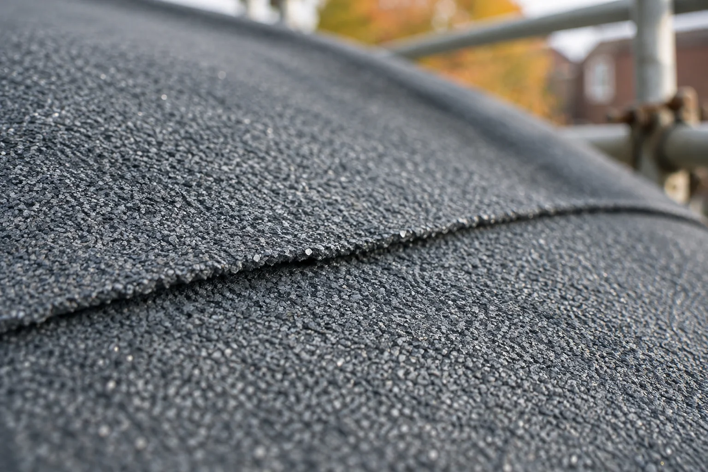

Essential measuring skills for all four roofing disciplines. Learn metric and imperial markings, practise accurate measurements, listen to the recorded lesson and check your knowledge with ten questions before continuing.
Introduction to Traditional Three-Layer
Built-Up Felt Roofing
Welcome. This lesson introduces the purpose,
main components and basic terminology of
traditional built-up felt roofing used on UK
flat and low-pitched roofs.
This is an educational overview, not an
instruction to carry out hazardous work.
What you'll learn
What a built-up felt roofing system is.
How the three layers work together.
Common roofing materials and roof decks.
Why drainage, workmanship and safety matter.
1. What is built-up felt roofing?
A built-up felt roof uses multiple layers
of compatible bituminous roofing membranes
to form a continuous weatherproof covering.
In many UK systems, the membranes are
modified-bitumen products designed for a
specified installation method. Materials,
layer numbers and application requirements
depend on the manufacturer's tested system
and the roof design.
2. Understanding the three layers
Base or underlay layer
Provides the foundation of the waterproofing
system and is installed as specified for the
substrate and roof design.
Intermediate underlay
Adds waterproofing redundancy and helps form
the continuous multi-layer covering.
Cap sheet
Forms the exposed weathering surface, often
with a mineral finish selected for the application.
Visual guide: the three membrane layers and the supporting deck. Not to scale; insulation, vapour control and fixing arrangements are omitted for clarity.

AI-generated illustrative close-up inspired by submitted felt-roof images; not a site inspection photo.
Layer names and specifications vary between
manufacturers. Always follow the approved
specification for the actual roof.
3. Roof deck and preparation
Common roof structures include timber decks
such as appropriately specified OSB3 or plywood,
and other engineered substrates.
Deck suitability depends on roof structure,
loading, moisture condition, fire performance
and manufacturer requirements.
A sound, dry, suitable substrate and correctly
designed insulation and vapour control are
essential to the completed system.
4. Falls, outlets and details
Flat roofs should be designed to drain.
Falls, outlets, upstands, edges, penetrations
and junctions are critical areas requiring
careful design and workmanship.
Standing water or poorly executed details
can shorten roof life and cause leaks.
Water should have a designed path to suitable outlets. This diagram is illustrative, not an installation detail.
5. Essential safety awareness
IMPORTANT SAFETY NOTICE
Torch-on roofing involves naked flames,
hot bitumen, combustible materials and
significant fire risk.
Working at height also creates a risk
of serious injury or death.
This lesson does not authorise or teach
anyone to use a roofing torch.
Practical work requires competent supervision,
suitable risk assessments, appropriate fire
precautions, fall-prevention measures and
compliance with UK requirements and
manufacturer instructions.
Use these links to find visual explanations alongside this lesson. Review each video's date, safety advice and manufacturer's instructions before relying on it. External videos are not endorsed or owned by this academy.
The waterproofing layer is only one part of an assembly. Check the specified deck, insulation, vapour control, membrane system, perimeter details and documented fire requirements. Products that look alike may not be interchangeable. Record product references and obtain approval for substitutions.
Can similar-looking membranes be freely substituted?
No. Compatibility and the specification must be checked.
Deck and moisture investigation
Distinguish surface condition from structural condition. Record existing roof build-up, signs of movement, moisture indications and previous repairs. Do not assume that visual inspection establishes loading capacity or concealed moisture; escalate uncertainty before specifying work.
Does a dry-looking deck prove it is suitable?
No. A competent assessment and the approved design are required.
Fire risk and hot works
Identify combustible and concealed elements at the survey and design stage. Use the specified safe system and applicable permit arrangements; if risks cannot be controlled, seek an approved flame-free alternative. Follow the site fire emergency arrangements.
Can combustible construction be judged by its outer finish alone?
Original illustrated micro-lesson with synthetic English narration; not filmed installation footage.
Read transcript
A built-up roof combines compatible layers to protect the building from weather. The assembly also depends on its supporting deck.
Different systems have different attachment, moisture and fire requirements. Follow the approved specification rather than treating a diagram as a method.
Knowledge check: is the cap sheet alone the roof system? No. The complete assembly and its interfaces matter.